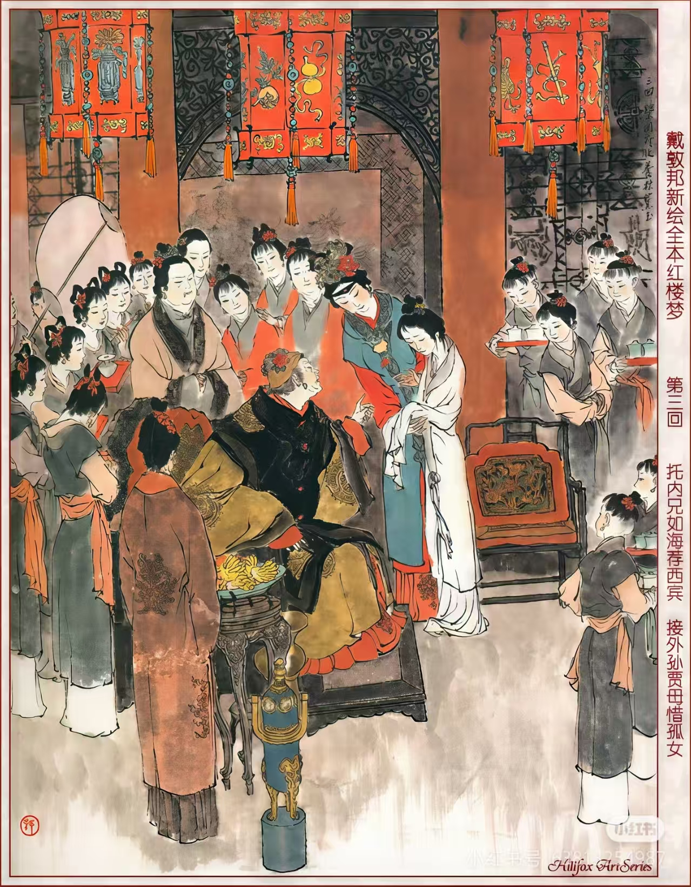
曹雪芹
清代文学家
《红楼梦》作者，中国古典小说巅峰之作，以贾、史、王、薛四大家族兴衰为背景，展现封建社会人情世态。

清代文学家
《红楼梦》作者，中国古典小说巅峰之作，以贾、史、王、薛四大家族兴衰为背景，展现封建社会人情世态。
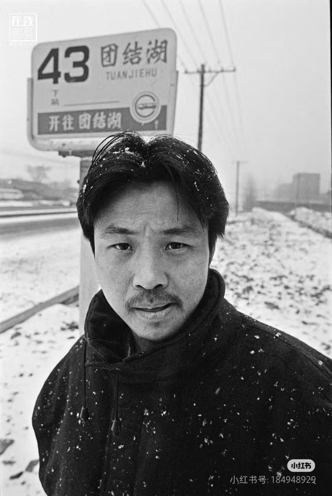
中国当代作家
《活着》《许三观卖血记》作者，作品以冷峻的笔触描写中国社会变迁中小人物的命运与生存状态。
中国当代作家
《我与地坛》《务虚笔记》作者，作品关注生命意义、命运与信仰，以独特的生命体验探讨存在价值。
中国台湾作家
《撒哈拉的故事》《雨季不再来》作者，作品充满异域风情与人文关怀，展现对自由、爱情与生命的独特理解。
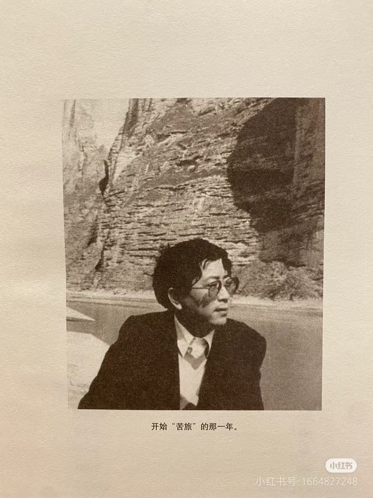
中国当代学者、作家
《文化苦旅》《千年一叹》作者，以历史文化的深度探索和散文笔法，展现中华文化的博大精深与现代反思。
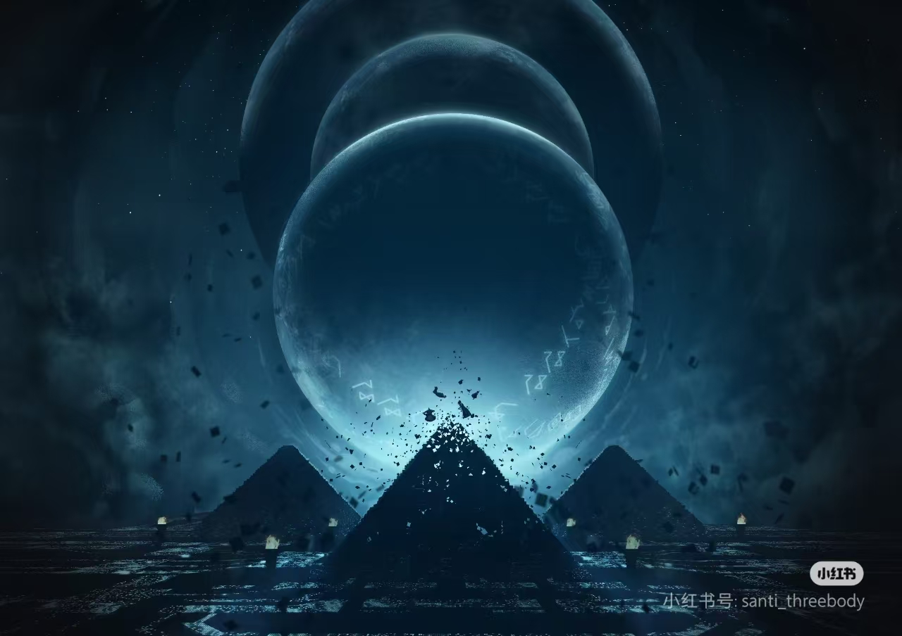
中国当代科幻作家
《三体》三部曲作者，中国科幻文学的代表人物，其作品以宏大的宇宙视角和深刻的哲学思考著称。
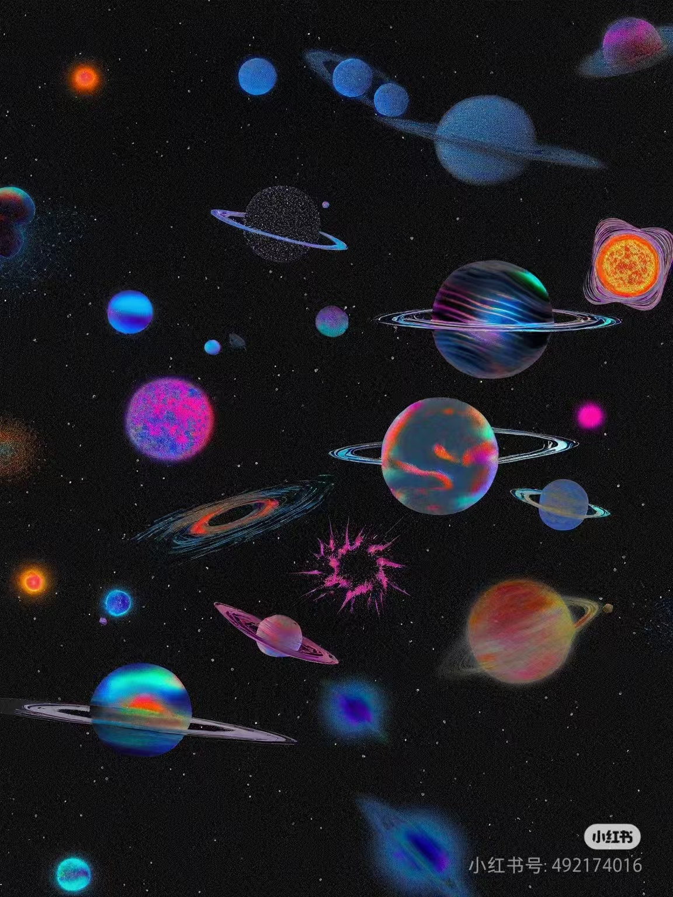
美国科幻作家 (1920-1992)
科幻小说黄金时代的代表作家之一，以《基地系列》、《银河帝国三部曲》和《机器人系列》闻名。

美国科幻作家 (1948-)
赛博朋克文学的开创者，《神经漫游者》作者，预言了互联网、虚拟现实等科技发展。

美国科幻作家 (1920-1986)
《沙丘》系列作者，作品融合政治、宗教、生态和哲学，创造了科幻文学中最复杂的世界观之一。
英国作家 (1903-1950)
以《1984》和《动物农场》闻名，作品深刻探讨极权主义、言论自由和个人自由等主题。
英国作家 (1894-1963)
《美丽新世界》作者，描绘了一个由技术控制的未来社会，探讨自由、幸福与人性本质。
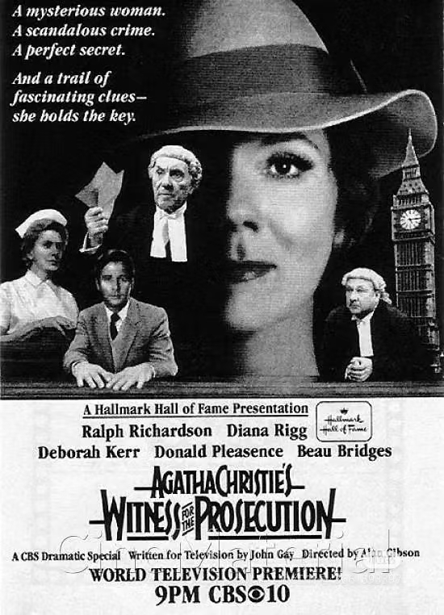
英国侦探小说作家 (1890-1976)
世界最畅销的作家之一，创造了赫尔克里·波洛和马普尔小姐等经典侦探形象。
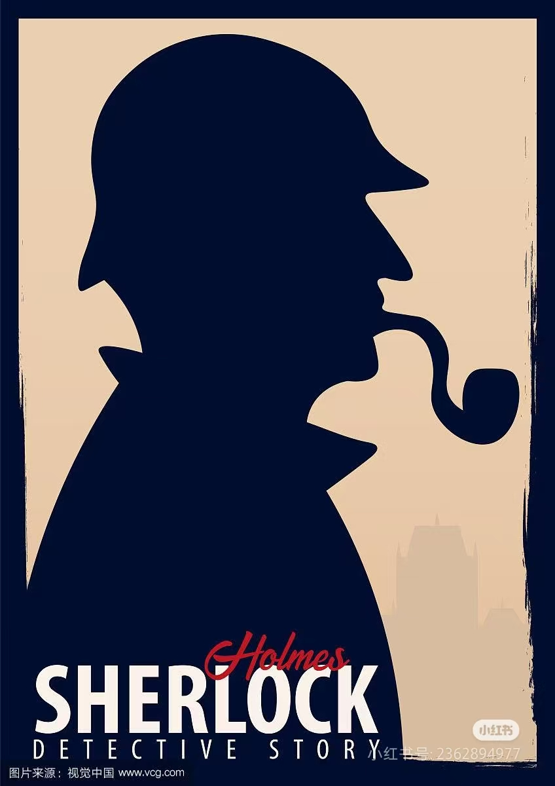
英国作家 (1859-1930)
创造了夏洛克·福尔摩斯这一世界文学史上最著名的侦探形象，开创了推理小说的黄金时代。
美国侦探小说作家 (1888-1959)
硬汉派侦探小说的代表，创造了菲利普·马洛这一经典侦探形象，影响了无数犯罪小说和电影。

日本推理小说作家 (1958-)
日本当代最受欢迎的推理小说家之一，作品融合精妙诡计与人性深度，代表作《白夜行》、《解忧杂货店》。
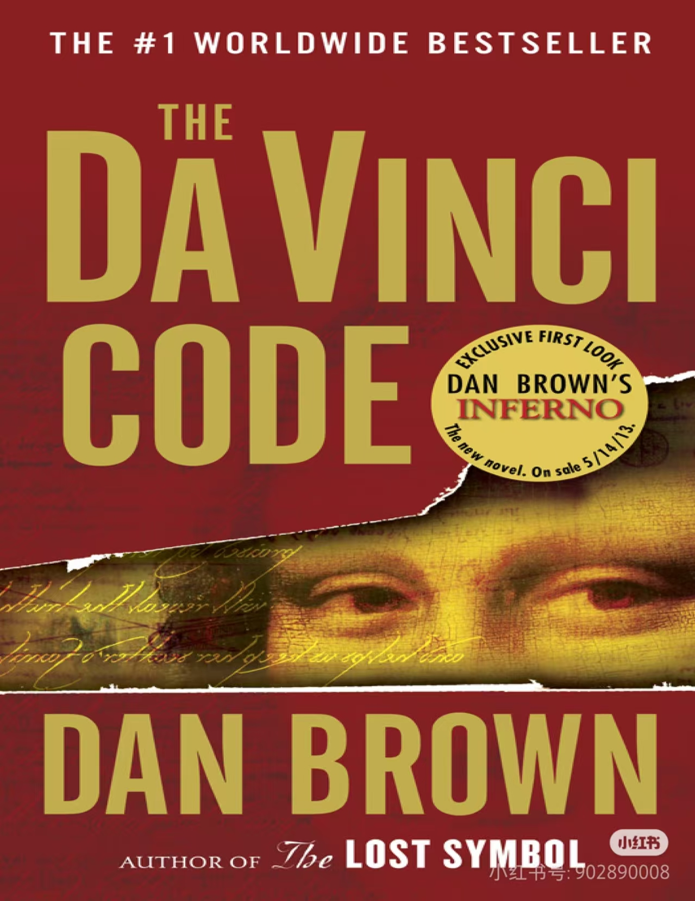
美国悬疑小说作家 (1964-)
以《达·芬奇密码》闻名，作品融合历史、艺术、密码学与悬疑情节，创造了独特的"知识悬疑"风格。
俄国作家 (1828-1910)
俄国文学巨匠，代表作《战争与和平》、《安娜·卡列尼娜》，作品深刻探讨人性、历史与道德。
哥伦比亚作家 (1927-2014)
拉丁美洲魔幻现实主义文学的代表，1982年诺贝尔文学奖得主，《百年孤独》影响了世界文学。
法国作家 (1802-1885)
法国浪漫主义文学的代表人物，代表作《悲惨世界》、《巴黎圣母院》，作品充满人道主义关怀。
英国作家 (1775-1817)
英国文学史上最重要的女性作家之一，以细腻的社会观察和机智的对话闻名，《傲慢与偏见》是其代表作。
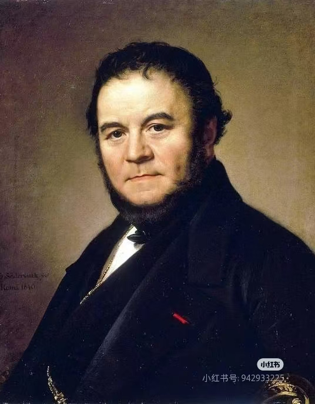
法国作家 (1783-1842)
法国现实主义文学的先驱，《红与黑》是心理分析小说的杰作，深刻描绘了个人野心与社会限制的冲突。
爱尔兰作家 (1882-1941)
20世纪最具影响力的作家之一，《尤利西斯》是现代主义文学的里程碑，革新了小说的叙事技巧。
日本作家 (1949-)
当代日本最具国际影响力的作家，作品融合现实与超现实，探讨现代人的孤独、失落与自我探索。
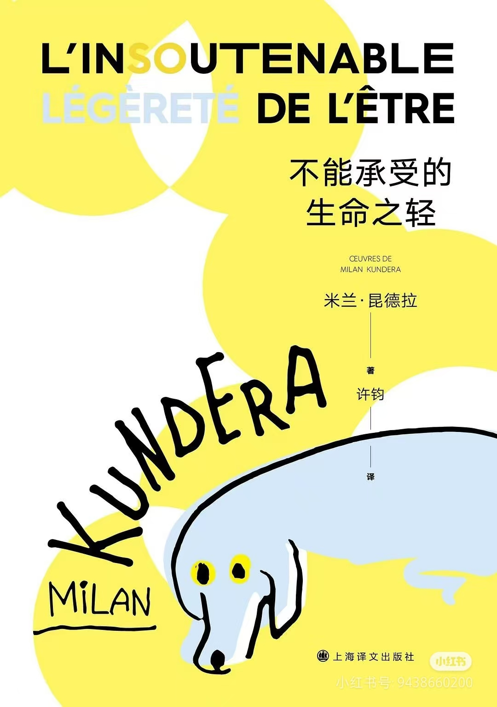
捷克裔法国作家 (1929-2023)
捷克裔法国作家，作品探讨存在、政治、爱情与记忆等主题，将小说与哲学思考完美结合。
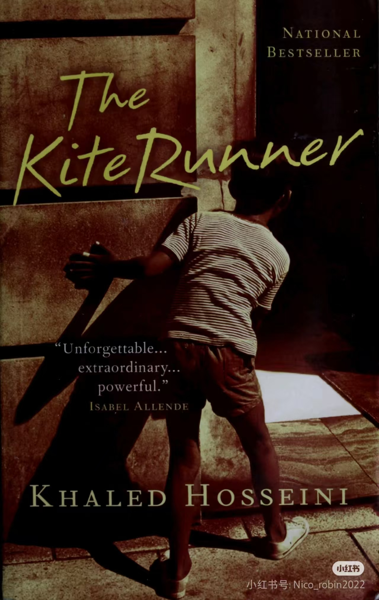
阿富汗裔美国作家 (1965-)
阿富汗裔美国作家，以《追风筝的人》闻名，作品讲述阿富汗的历史与人性故事，感动全球读者。
加拿大作家 (1939-)
加拿大著名作家，作品涵盖小说、诗歌和文学评论，《使女的故事》已成为反乌托邦文学的经典。
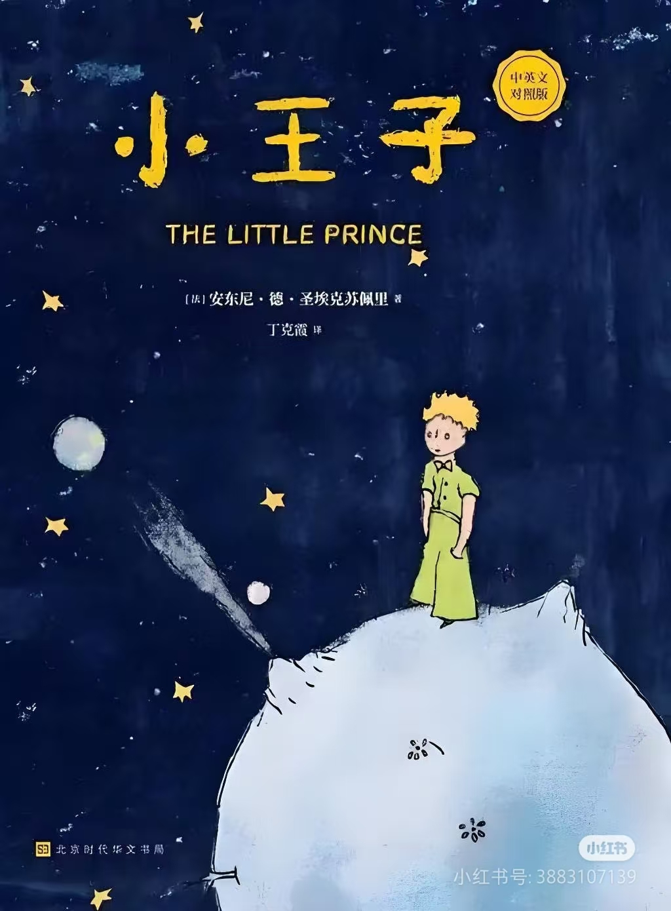
法国作家 (1900-1944)
法国作家、飞行员，《小王子》是世界最畅销的书籍之一，以简单语言探讨深刻的人生哲理。